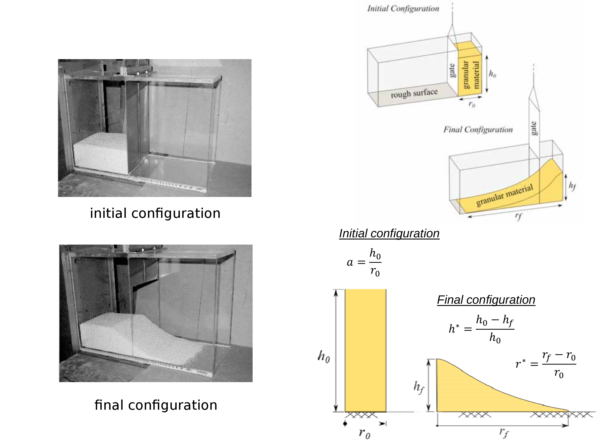
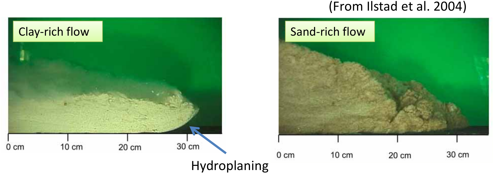

Large deformation modelling in geomechanics
MPM, LBM-DEM and LEM
Krishna Kumar, kks32@cam.ac.uk
University of Cambridge


The University of Cambridge
14th November 2018
Scales in modelling soil

Cambridge-Berkeley Computational Geomechanics
- Material Point Method
- Lattice-Boltzmann + Discrete Element Method
- Finite Element Method - Thermo-Hydro Mechanical Coupling
- Lattice Element Method

Global landslide hazard

Oso landslide (2014)

Multiscale modelling in geomechanics

Discrete Element Method
- Particle level interaction based on Newton's equation of motion
- The contact force is computed as:
- The Newton's equation of motion
Mesh-based vs Mesh-free techniques

Material Point Method

Material Point Method


Granular column collapse
Experimental results (Lube et al 2005)
Micro to Macro

MPM v DEM column collapse


MPM v DEM column collapse

DEM column collapse
MPM v DEM column collapse

Collisional dissipation mechanism is missing in the continuum approach.
MPM slope failure
Horizontal velocity (m/s)
MPM v DEM uniform impact (200 J)

MPM v DEM runout slope v collapse
MPM slope failure: pore pressure changes
Selborne case study of a 9 m high cut-slope slope (Soga et al., 2016)
HPC MPM code
- Generic Templatised C++14
- 2D/3D MPM Code
- Generalise Interpolation Material Point
- Distributed MPI
- Intel TBB parallelisation
- Isoparametric elements
- HDF5 data stores
- Jupyter Notebooks integration
- Material models:
- Linear elastic
- Mohr coulomb
- Bingham fluid
- Newtonian
Photo-realistic rendering
- HDF5 + VTK
- Disney Partio: Houdini / Maya / Pixar's RenderMan
Disney's Frozen: Snow simulation
Possible boundary conditions of submarine run‐out

- Presence of ambient water (larger drag force & less gravity).
- Water entrainment.
- Pore pressure does not dissipate.
Submarine landslides

MPM submarine landslide
Depth-averaged Material Point Method (Taka et al., 2012)
Mechanism of submarine landslides
Modelling Test at 1g Condition
- Material type influences the mode of the flow.
- Target: Clay‐rich flow (Less diffusive, Hydroplaning).
Mechanism of submarine runout

MPM submarine landslide: Water entrainment
Run-out for different water entrainment (Taka et al., 2012)
LBM - DEM simulation of granular collapse in a fluid
aspect ratio 'a' of 6
Lattice Boltzmann - MRT


- $S_{\alpha i}$ is the collisional matrix.
- Probability density of finding a particle : $f(x,\varepsilon, t) $, where, x is position, $\varepsilon$ is velocity, and t is time.


LBM-DEM fluid-solid coupling

- At every fluid iteration, $\mathit{n}_{s}$ sub-steps of DEM iterations are performed using the time step $\Delta t_{s}$.
- The hydrodynamic force is unchanged during the sub-cycling.
LBM laminar & turbulent flows


Smagorinsky model (LES):
Karman Vortex Street
Collapse in a fluid

Granular collapse in a fluid: Effect of aspect ratio
aspect ratio 'a' of 0.4
aspect ratio 'a' of 4
Collapse in a fluid: Runout evolution

Critical time $\tau_c=\sqrt{H/g}$ (Staron and Hinch, 2005)
where, H = Height of the granular pile.
LBM - DEM simulation of granular collapse in a fluid
aspect ratio 'a' of 8
Runout: dry vs fluid

Dry collapse flowed further than the underwater collapse
Collapse in a fluid: Effect of permeability
Dirichlet boundary conditions constrain the pressure/density at the boundaries (Zou and He, 1997)
$\rho_0=\sum_{a}f_{a} \mbox{ and } \textbf{u}=\frac{1}{\rho_0}\sum_{a}f_{a}$

Reduction in radius

Collapse in a fluid: Effect of permeability
Reduction ‘r’=0.7R (High permeability)
Reduction ‘r’=0.9R (Low permeability)
Effect of permeability: runout

Effect of permeability: runout
Effect of permeability: kinetic energy

Effect of permeability: runout
Collapse in a fluid: Effect of permeability
Hydrodynamic force (x-dir)

Low permeability condition has large fluctuations in hydrodynamic forces.
Collapse in a fluid: Effect of permeability
Hydrodynamic force (x-dir)

250 - particle at the bottom of the flow;
872 - particle at middle of the flow; 1007 - particle at the surface of the flow
Effect of permeability: stress
Collapse in a fluid: Effect of permeability

Effect of permeability: pore-water pressure

Effect of permeability: effective stress

Low permeability - no effective stresses at the flow front (hydroplaning)
Effect of permeability: drag vs hydroplaning

High permeable flow front experiences drag, while low permeable flow experiences hydroplaning.
Effect of permeability: runout (loose)

Collapse on an inclined plane
aspect ratio 'a' of 6 on a slope of 5*
Collapse of a dense column on an inclined plane
Collapse of a dense column on an inclined plane
Collapse of a dense column on slopes: runout
Collapse of a loose column on slopes: runout
Loose v dense: Initiation phase
Loose v dense: Initiation phase

Pore-pressure distribution along the failure plane during initiation.
Loose v dense: Runout phase

Loose v dense: Runout phase


Loose v dense: Runout phase

Collapse on slopes: loose v dense

Kinetic energy evolution
Loose v dense: Settlement phase

Collapse on slopes: loose v dense

CPU v GPU

CPU v GPU
Super computing

LBM-DEM Multi-GPU implementation
LBM - DEM a = 0.8 & 10,000 particles
- LBM Nodes = 50 Million : DEM grains = 10000 discs
- Run-time = 4 hours
- Speedup = 125x on a Pascal P100
2D to 3D

LBM multi-component multi-phase
Lattice Element Method
LEM Tension test
LEM: Tension test (uniform)
LEM: Tension test (Log-Normal 1.0)
LEM Tension test
Lattice Element Method - Fluid coupling

- First assume injection pressure $P_{in}$ and injection rate $Q_{in}$ at injection point
- Solve fluid pressure at each fluid node
- Convert pressure to node force and solve LEM to update fracture aperture
- Repeat the above process until convergence
LEM fracturing
Wong et al., (2016)
Agent Based Modelling of cities
Soga et al., (2017)
Network analysis of Herpes Simplex Virus (HSV2)


(Underdown et al., 2017)
The usual suspects

Cellular Automata modelling of disease
Top 5% of all research outputs scored by Altmetric

#3. We found out who gave us herpes